{kind=link}
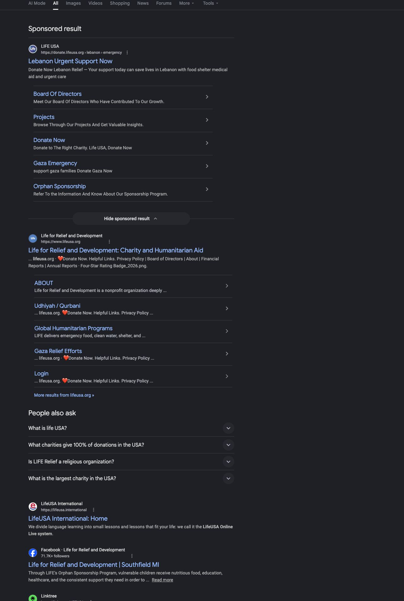
Google Search baseline
Query: LifeUSA. English, US locale, personalization disabled. Official paid and organic LifeUSA results appear, alongside a similarly named language-learning company.
Open the repeatable queryReplace retired LifeUSA logo signals across owned pages, Google properties, and authoritative third-party sources, then monitor until the current logo is consistently shown.
The first scheduled weekly check is complete. No reply, source correction, or Google refresh has been proved.
Directory publication execution has produced two qualifying new profiles. Find-Us-Here and A-Z Business Finder are independently public, show the approved current square logo, and link to the canonical HTTPS LifeUSA site. A separate access register now preserves 13 important existing profiles instead of neglecting or duplicating them. Every.org is the first priority: its exact EIN profile uses a generic avatar and an HTTP website link, while the platform reports that an administrator already exists. Deed explicitly supports adding a logo after claim; Benevity, PayPal Giving Fund, Apple, Bing, Foursquare, Yelp, Cybo, CitySquares, ChamberofCommerce.com, Manta, and Double the Donation require owner-access follow-up or capability confirmation. Existing profiles do not count toward the 20-new-profile target. New profiles done: 2 of 20.
Replace or remove retired-logo files at the source before requesting Google refreshes.
Use the canonical square for new placements while recognizing the approved blue-globe variant as current.
Separate source fixed, refresh requested, Google result changed, and monitoring complete.
Phase progress is calculated from the action register below.
Change any action to Done or add a note. Updates save only in this browser unless exported and committed later.
Review the exact external effect, route, prepared copy or action package, and acceptance check before authorizing execution.
Nothing here sends automatically. Choosing Approved records a decision in this browser; Codex still waits for an explicit instruction before executing the item.
8 pending approval · 2 already sent
The full durable record, including exact recipient addresses and complete prepared copy, is available in the human approval queue document.
These decisions control whether implementation can move safely.
Public evidence collected independently from July 15 through July 19, 2026.
The broad branded query currently favors official LifeUSA sources. Direct checks found three retired-crescent sources that remain actionable and eight blue-globe profile signals that are now classified as acceptable current variants. The program separates canonical current, acceptable current variant, retired, uncertain, and unrelated results.

Query: LifeUSA. English, US locale, personalization disabled. Official paid and organic LifeUSA results appear, alongside a similarly named language-learning company.
Open the repeatable query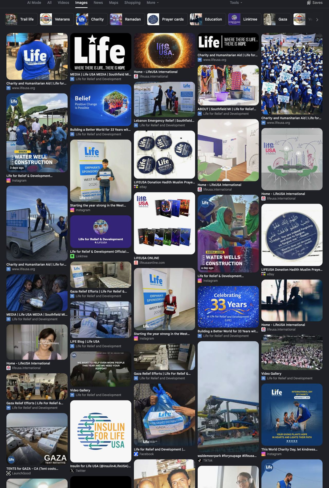
The first 20 contain 14 official results, four unrelated same-name business results, and two current-branded marketplace results. No retired crescent mark appears in this exact broad-query sample.
Open the repeatable image queryThe approved 4101 by 1201 source is now live as a dedicated LifeUSA Wix Media Manager asset, with a remote checksum that exactly matches the website source.
Open the canonical horizontal file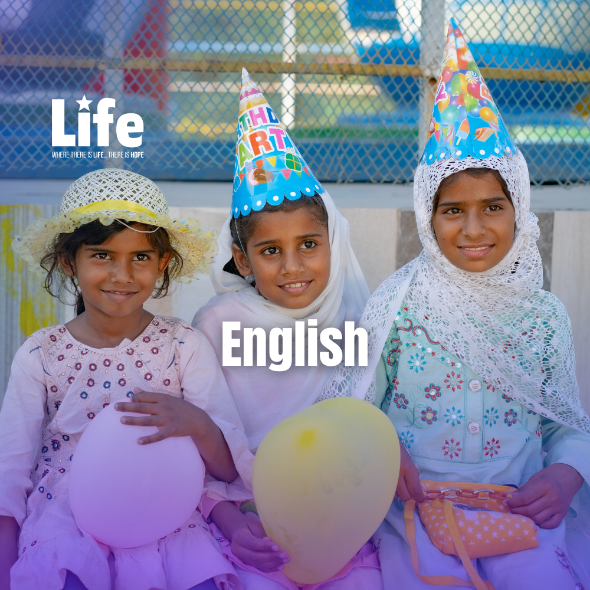
The English Linktree displays the canonical logo family and identifies LifeUSA's social accounts. The blue-globe photos on Facebook and matching profiles are acceptable current variants. The incorrect English Linktree Facebook destination remains actionable.
Verify the official social directoryThe public favicon source is a current 1800 by 1800 square asset that remains visible on white. It is a strong candidate for the stable owned logo URL and NGO markup.
Read the owned-signal auditResult order was recorded from the same personalization-disabled Google Images session, then ambiguous domains were checked directly before classification.
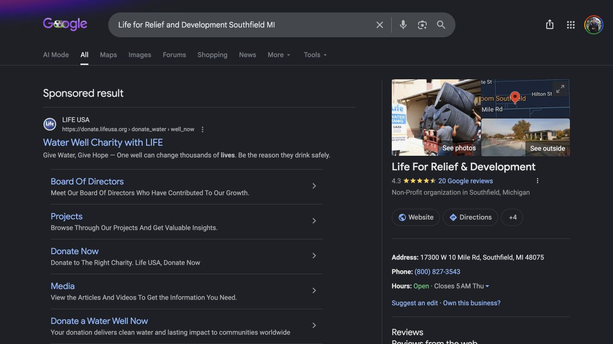
The sponsored LifeUSA result serves the acceptable current blue-globe variant. The right-hand result is the established Southfield Business Profile, not a separate nonprofit Knowledge Panel.
Repeat the entity query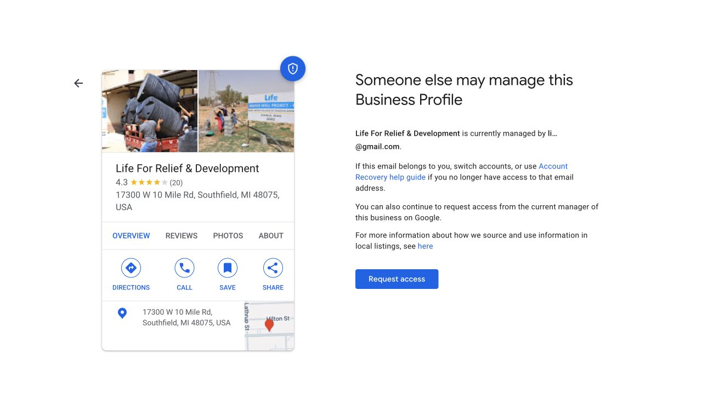
The real listing has 4.3 stars, 20 reviews, and the correct address. Google reports that a masked li...@gmail.com account manages it; no access request was sent.
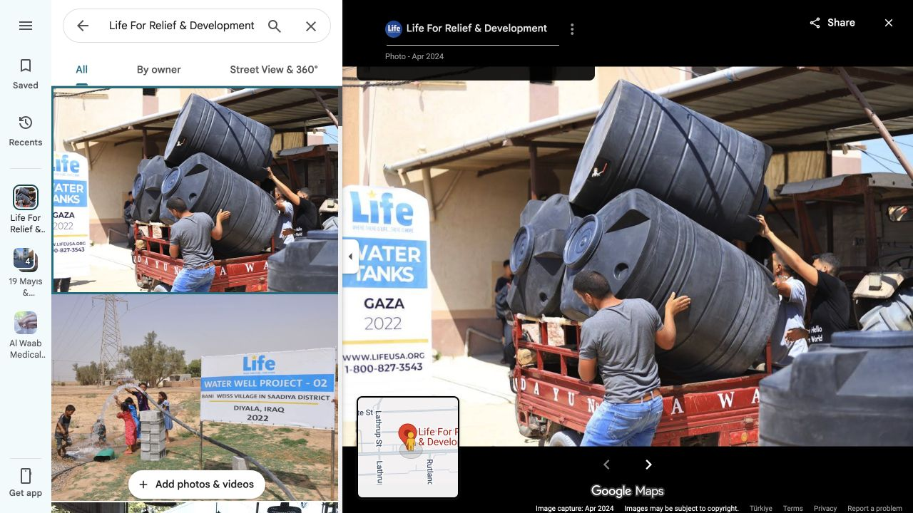
The Maps profile still links to http://www.lifeusa.org/. Its public media also exposes a contributor identity carrying the acceptable blue-globe variant.
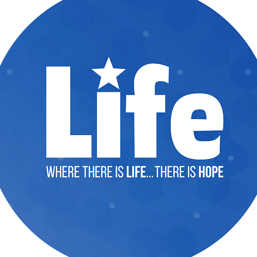
A contributor account associated with listing media uses the acceptable current blue-globe variant. It is not a retired-logo correction target.
Open the full property audit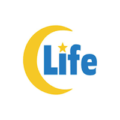
200 by 200 retired profile logo remains live and requires a publisher correction.
Verify the source page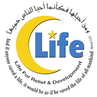
200 by 200 retired organization logo remains live with an outdated profile.
Verify the source page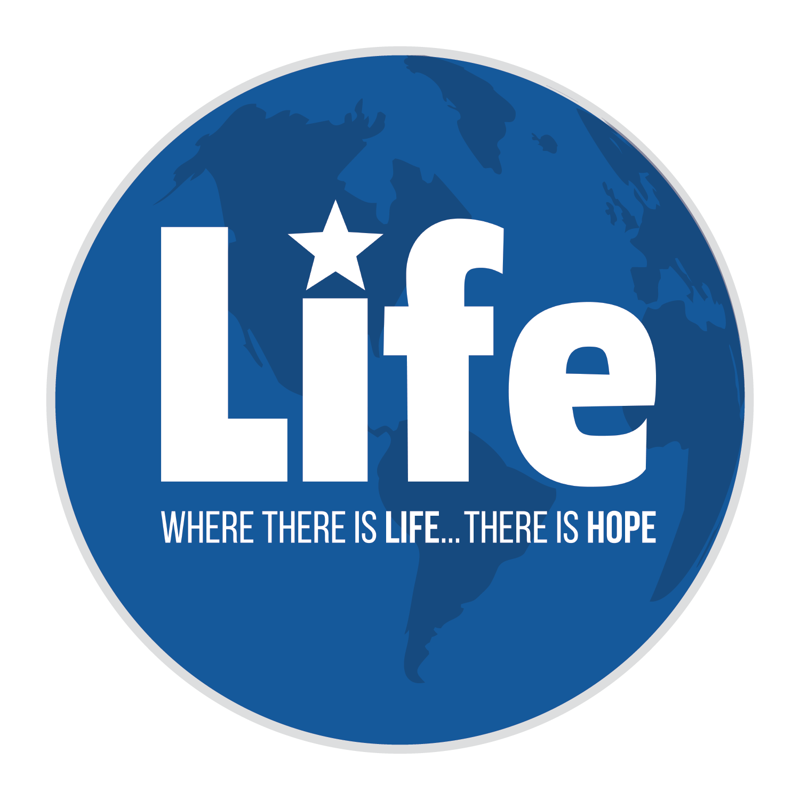
The claimed nonprofit profile exposes a 1500 by 1500 acceptable current blue-globe variant.
Verify the public profile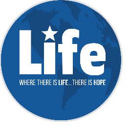
The organization profile exposes a 266 by 266 acceptable current blue-globe variant.
Verify the public profile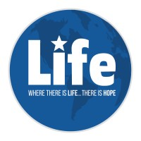
The official company page uses the acceptable current blue-globe variant.
Verify the company page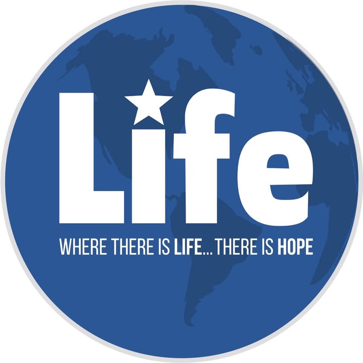
The main English page uses an acceptable current variant. The English Linktree still points its Facebook button to a Somali-language page.
Verify the English pageThe July 15 logged-out preview exposed the acceptable current blue-globe variant.
Verify the profile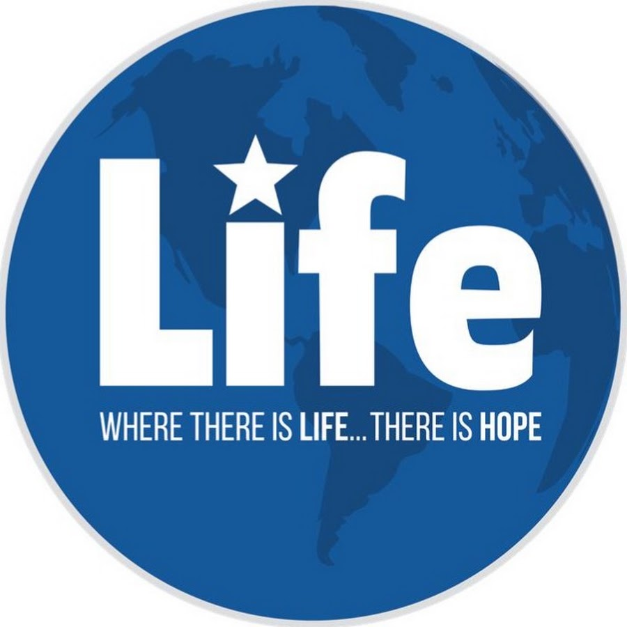
The official channel uses a 900 by 900 acceptable current blue-globe variant.
Verify the channel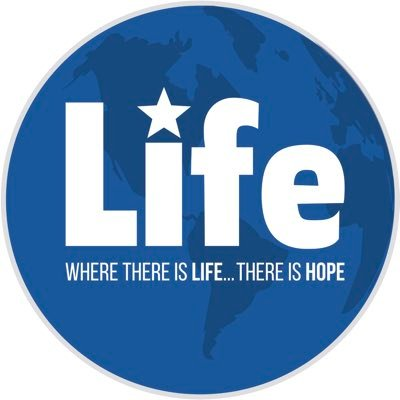
The English Linktree opens the Somali-language Facebook page. Its blue-globe logo is acceptable; the destination mismatch is the defect.
Verify the English directoryCapture protocol: 1280 px desktop viewport, English, United States, pws=0. Google reported “Results are not personalized.” The claim-state capture publishes only Google's masked manager address, and no access request was sent. Read the evidence record.
Official Google documentation supporting the execution and monitoring approach.
{kind=link}
{kind=link}
{kind=link}
{kind=link}
{kind=link}
{kind=link}
{kind=link}
{kind=link}
{kind=link}
{kind=link}
{kind=link}
{kind=link}
{kind=link}
{kind=link}
{kind=link}
{kind=link}
{kind=link}
{kind=link}
{kind=link}
{kind=link}